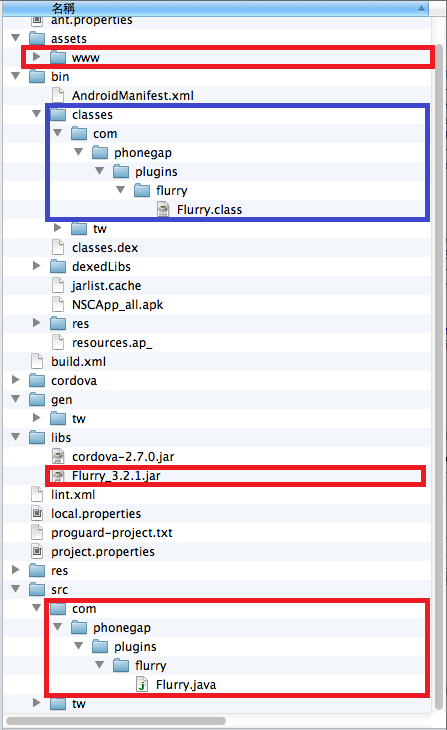
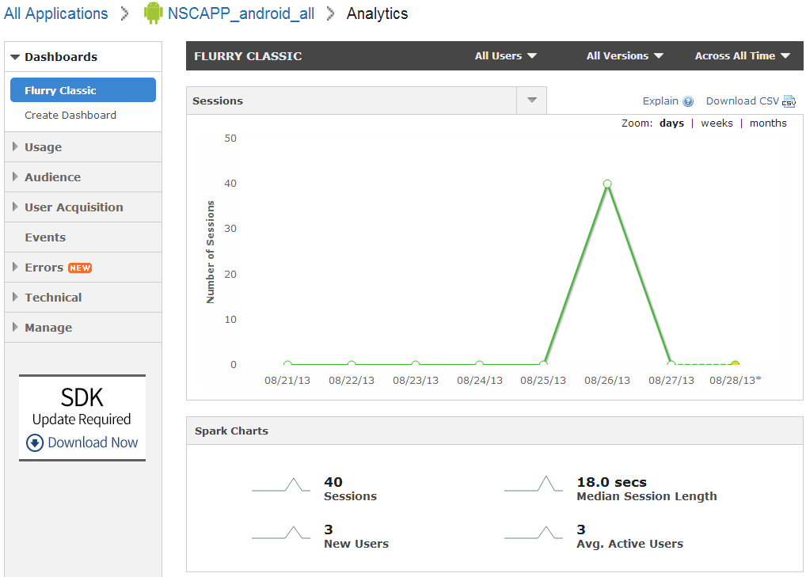

關於Flurry在Android上面的設定
接續上一篇Flurry on iOS，這篇來講android上的設定
在android上的安裝大致上也是先一樣在Flurry官網上面新增一個application來追蹤的key並且下載下面兩個檔案
接下來按照下面步驟放入android專案中
Flurry Setup on Android
- 將Flurry SDK中的Flurry.jar放到libs目錄當中(須注意是否有將它設為build path)
- 將FlurryPlugin中的Flurry.java放到src 目錄中(這邊依照使import時希望呈現的namespace建立目錄或是透過eclipse加入則自動建立對應的目錄)，再將然後再把flurryPlugin.js放入www下任意位置(這邊放在www/js/android/flurryPlugin.js)
- Android專案中記得先確定對應的設定檔(AndroidManifest.xml)是否把INTERNET、ACCESS_COARSE_LOCATION等權限打開(新版phonegap專案預設都是全開)
- 同iOS的使用，你可以在你的html中加入下面這段語法來啟用你的flurry資料蒐集並建立一個event
1 | <script type="text/javascript"src="js/android/flurryPlugin.js"></script><!--此段記得要放在cordova.js之後--> |
5.或是你也可以在android內的onStart()跟onStop()中設定key並啟動session蒐集Flurry要得資料，
1 | package tw.gov.nsc.mobileApp.NSCApp_all; |
最後會異動的項目與專案架構如下(紅框是放檔案處，籃框是編譯完的class)

這邊再補充一下Flurry能做到的事情，登入Flurry後到你該Application的頁面會先看到一個簡單的統計圖片與資料，包含了最近日期的Session數(通常可以視為app打開的次數)、平均使用時間、使用者(可以分辨新舊，這邊是用device區分)、error次數紀錄、使用者區域顯示(用地圖呈現很sweet)


如果覺得這樣的dashboard不夠滿足你也可以透過右邊的create dashboard來建立自己的呈現dashboard,此外右邊你也可以點開看各項細部內容
Usage
各項使用資訊，包含
- Active Users
- Sessions
- Session Length Benchmarks
- Frequency of Use Benchmarks
- Lifecycle
- User Retention Benchmarks
- Top Versions
- Page Views
Audience
各項與使用者相關的資訊，包含
- Interests: My Apps
- Interests: Category
- Personas
- Age
- Gender
- Geography
- Language
User Acquisition
用戶在各平台的使用表現，主要讓你建立比較圖，方便在該APP或服務有多平台時，決策投入多少行銷資源比較划算或是找出該平台目前較差或較好的項目


Events
提供各項事件相關資訊，最酷的事可以呈現事件與事件彼此互動的關係(先後啟動或是呼叫)
- User Paths
- Funnels
Event Logs


Errors
提供各項Errors的相關資訊，幫你釐清發生時的人事時地物

Technical
提供各項載具的相關資訊，如平台、版本、型號等

至於如何將取得的資料做有效的分析，最近悠識有在開課(但最近的梯次都結束了)，詳情可以詢問一下他們?(但我沒有幫他們打廣告歐)